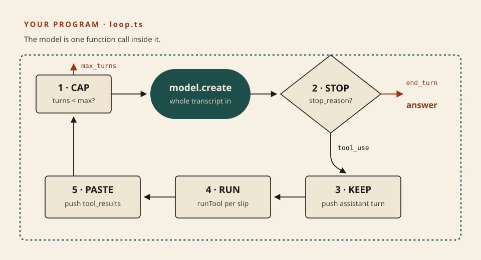
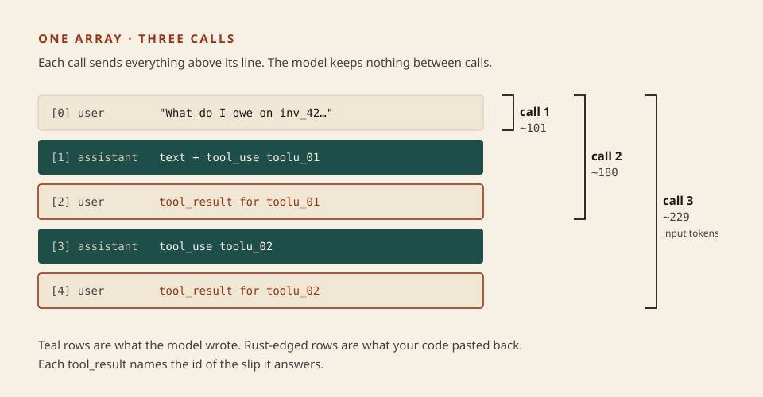

Build it in code
Write the loop
Twenty lessons described the machine. Tonight you type it. Lesson 0005 said the model writes a slip and you run it. Lesson 0007 said a harness wraps that loop. The loop is about twenty lines of TypeScript, and after tonight they are your twenty lines. No API key, no account, no cost.
What this is. You fill in five gaps in one file, loop.ts, and a grader tells you in the terminal whether your loop is correct. The model on the other end is a scripted stand-in: a small local file that replies in the exact shape the Claude Messages API uses and rejects a malformed transcript the way the real API does. Handle tool calls — Claude docs
What this is not. A real model call. The stand-in has no intelligence; it reads from a script. What is real is the part you write: the control flow and the transcript. Swapping in a live model later changes one line. Also not tonight: streaming, error results, the SDK's ready-made tool runner, permissions.
- StopRead
stop_reason. Cap the turns. - KeepPush the assistant turn, whole.
- Run · PasteOne result per slip, one message.
The model call sits in the middle. Everything in this list is code you own.

The five TODOs, in the order they sit in the file. Two exits: the model says it is done, or you say it has had enough.
The response tells you what to do next
Every reply carries a stop_reason. When the model wants a tool, the docs say the response “will have a stop_reason of tool_use” and one or more tool_use blocks, each with an id, a name, and an input. When it is finished, stop_reason is end_turn. Your loop branches on that one field. Handle tool calls
The model still never runs anything (0005). It hands back a slip; your runTool does the work on your machine. How tool use works
- Keep Push
{ role: "assistant", content: response.content }before anything else. The whole content array, text and slips together. The next call needs to see the slip it is getting an answer to. - Paste Results go back in a message with role
user. There is notoolrole in this API. Each block is{ type: "tool_result", tool_use_id, content }, andtool_use_idis the slip’sid. - One message The result message must come immediately after the assistant’s slip message. If one turn held two slips, both results go in that single message. Miss one and the real API answers 400. The stand-in does the same.
- Cap A model can keep asking for tools forever. The count that stops it lives in your code, in the gap between the model choosing a tool and you invoking it. Factor 8 · Own your control flow
node run.ts · what a correct loop prints
TRANSCRIPT (this whole array is resent on every call)
[0] user text What do I owe on inv_42, and is it overdue?
[1] assistant text I'll look up the invoice first.
[1] assistant tool_use get_invoice({"invoice_id":"inv_42"}) id=toolu_01
[2] user tool_result {"amount_due":120,"due_date":"2026-09-30"} for=toolu_01
[3] assistant tool_use get_today({}) id=toolu_02
[4] user tool_result 2026-10-05 for=toolu_02
ANSWER Invoice inv_42 has $120 due on 2026-09-30. Today is 2026-10-05, so it is overdue.
STOPPED end_turn
CALLS 3
INPUT TOKENS PER CALL (rough) 101 -> 180 -> 229
What this shows. Three calls for one question. Message [1] holds two blocks from one assistant turn, which is why you keep the whole array. Rows [2] and [4] were written by your code, not the model, and each names the slip it answers. The last line is lesson 0002 in numbers: the transcript is resent every call, so input grows each turn even though the question never changed. Token counts here are a rough four-characters-per-token estimate; a real response reports exact ones in usage.

The model keeps nothing between calls. The array is the memory, and you are the one holding it.
Skill: make the grader go green
Predict first. Before you type, say out loud what order the five steps run in and which two return. Then write it.
Four checks, one file
Open a terminal in the course folder and go to the exercise. Node 22 runs .ts files directly, so there is nothing to install.
cd code/0021-write-the-loop node check.ts
All four fail. Open loop.ts, write the five TODOs, delete the throw at the bottom, and run the grader again. It names the first thing that is wrong:
PASS 1 · two tools, then an answer
FAIL 3 · two slips in one turn get one reply
400 (fake): tool_use "toolu_12" in messages[1] has no
tool_result in the next user message
When all four pass, print your own transcript and compare it with the grey box above:
node run.ts
Stuck for more than ten minutes on one check? Read the FAIL line slowly — the grader names the first thing that is wrong. The reference answer is in solution/loop.ts; reading it before the grader has told you something costs you the lesson.
What is yours, what is rented
Yours tonight
loop.ts. The branch on stop_reason, the transcript, the cap. This is the naked loop from 0007, before any harness is wrapped around it.
Stand-in
fake-model.ts. With the real SDK the call becomes client.messages.create({ … }) with the same tools and messages. Your loop body does not change.
Next
Put allow into the gap between RUN and the tool (0007, 0020): a slip your code refuses, and what you paste back when it does.
Parked: is_error results, streaming, max_tokens and pause_turn stop reasons, strict schemas, and the SDK’s tool runner, which writes this loop for you. Anthropic’s docs recommend the runner for most work. You are writing it by hand once so that you know what it is doing when you rent it.
Check
From memory, after the grader is green.
Primary source. Handle tool calls. Ten minutes. Read the two example JSON blocks and the “Important formatting requirements” note; they are the rules the grader enforces. Then Factor 8 for why owning this loop matters.
Card: tools (now with the loop in code). Wrapper: harness. Window: context window.